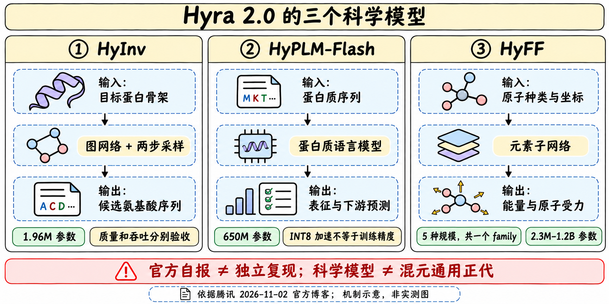

HyPLM-Flash：650M蛋白质语言模型
定位与资料边界
Hyra 2.0从头训练HyPLM-Flash；模型把氨基酸序列映射成残基级/整蛋白表征，支持masked language-model logits，可用于突变打分、结构与功能预测。它不是HyInv那种给骨架生成序列的逆折叠器，也不是直接输出临床结论的系统。

结构与训练口径
| 规格 | 官方事实 | 不直接推导 |
|---|---|---|
| 规模 | 650M参数 | 参数小等于每项任务优于大模型 |
| 骨干 | 32层Transformer，hidden1280，20heads | 不把蛋白语言模型说成自然语言聊天模型 |
| FFN | intermediate3584；MLM head含dense/GELU/LayerNorm/decoder | 发布配置不等于完整训练recipe |
| 词表 | 33；无结构词表、structure_loss_weight=0 | 不据此编造训练中所有辅助目标 |
| 训练量 | 博客726B训练tokens | 不等于726B条独立蛋白或去重样本 |
| 发布/推理 | 约2.6GB FP32权重；INT8默认引擎 | INT8训练或无损压缩 |
博客说训练量为ESM-2 650M的0.73倍、E1-600M与ESM C 600M的1/5–1/8；分母对应厂商比较口径，不据此断言同数据质量、同算力或同训练成本。实际数据组成和重复轮次需要报告文本才能复核。
评测与两套公开口径

| 来源 | 自报结果 | 保留限制 |
|---|---|---|
| 博客 | 12个蛋白模型中推理最快，35任务平均排名第3 | 未读完整任务与归一化规则，不能称32任务同样第3 |
| README | 28个checkpoint、32任务的matched evaluation | checkpoint数不是独立架构族数 |
| ProteinGym zero-shot | Spearman0.409，与ESM-2 650M/ESM C600M/E1-600M统计持平 | 不能写“显著超过”或直接解释为正确率40.9% |
| 长程接触 | README称所有被测模型中precision最高 | 未获得完整分桶/阈值/置信区间，不推及所有蛋白 |
| 推理 | 单H20约130k残基/s，比其他600M级encoder快1.9–2.7倍 | 不是单蛋白端到端低延迟，也不含所有下游计算 |
INT8约130k、BF16约90k残基/s，约1.44倍差；zero-shot/结构/功能/似然指标与BF16相差在0.01内，是README所述测试范围，不保证任意任务无损。近似变体的表征差别仅约1%，因此FLIP的AAV、GB1这类近变体监督回归建议BF16，避免量化扰动覆盖有效信号。
接口与可复现部署
encode输出每条蛋白的CPU FP32 tensor：残基级[L,1280]或mean pooling的[1280]，去除首尾特殊token，保留输入顺序；可选中间层例如16。不要把pooled向量当每残基输出。
单序列至多8190残基，自动大写、去空白、J转X，非法字符报错。padding-free打包的默认batch_tokens32768限制一批预算，不是单序列上限。logits形状[L,33]；掩掉第3残基用0起始masks=[2]，T3V masked-marginal评分取该位置logP(V)−logP(T)，不等于预测真实适应度差。
官方建议Hopper CUDA GPU、Python3.10+，FA3可用时优先，否则FA2；Triton融合与INT8矩阵乘法属于引擎。多GPU接口每卡一个worker；单蛋白低延迟另有CUDA graph路径。固定checkpoint/revision、精度、层、pooling、序列预处理、packing与任务切分，再比较质量/吞吐。
来源与导航
📊 相关可视化：中文Poster